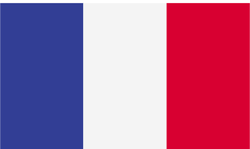

squishySlug
Développement Web | Web Design Web Development | Web Design

SquishySlug is building software solutions
by putting its wildly creative and analytical thinking
to the test everyday.
It’s about using outstanding problem solving skills
to produce robust and efficient code, while its vidid
imagination and fresh
outlook allow for a unique approach on technical challenges.
Bulding a project ?
SquishySlug is always on the lookout for
its next challenge.
SquishySlug implémente
des solutions logicielles en mettant tous les jours à
l'épreuve son esprit créatif et analytique.
Squishyslug produit du code robuste et efficace
à l'aide de ses capacités de résolutions de problèmes
hors du commun, tandis que son imagination débordante
et son regard neuf permettent une approche unique sur
les challenges techniques.
Vous avez un projet ?
SquishySlug est toujours à la recherche de
son prochain challenge.
LinkedIn : https://www.linkedin.com/in/leslie-roche-5974a0123/
Github : https://github.com/Lunacie
Curious about who's hiding behind the slug ?
My name is Leslie.
I am a France based Freelance Software Engineer (UTC+1)
with a passion for independant work and programming ever since childhood.
I have worked in Australia for multiple local companies/startup as well as
independently on dozens of web projects. I also have a few interesting personal projects.
I am currently working part-time as a mentor for the online programming
school OpenClassrooms.
How is all started
It all started in 2001, back when I was 9 years old and I
first started experimenting with web dev,
playing around with markup languages such as html
but also vrml, the markup language for virtual reality.
I learned about vrmlScript to add dynamism to the 3d cells I built. The scenes were
browser based and would run usign the Blaxxun
Contact plugin.
Those worlds I created were my introduction into programming, and I wanted to know more. I started by learning css/html and soon enough, got frustrated by the fact that the web content I built was always so static and I was no closer to figuring out how to build the worlds I had in mind.
The beginning of my freelance career
However, I used the newly aquired knowledge
to start building and selling web templates
by the time I was 13. I would design them
and then integrate the assets using css/html.
I would then upload the packaged archive
to websites such as
kitgraphique.net, which works as an affiliation
based program.
Autodidactism during my teenage years I got curious, and decided to learn php, then quickly moved on to learning actionScript. I started building my own flash games, galavnized by the realization that I could finally put those ideas into code and share them with the world. By the time I was 16, I started learning the C programming language and built a Sokoban clone.
I began taking on freelacing, building web projects while continuing selling web templates. I built and designed the first version of my portfolio for my web activity, which at the time, was called shaaDesign. No slug yet, just an elephant I designed.
Academic Trainning
Once I graduated highschool, I went on to
study Software engineering at the Paris
Graduate School of Digital Innovation (Epitech).
I worked on many projects, all more interesting
than the others and I became a technical
assitant during my 3rd year.
If not for the strong aversion to group work
I quickly developed due to my having Asperger's, as someone who has spent
most of her life centered around code since
childhood, I was in software engineering heaven...
For the most part.
I took a gap year between my 1st
and 2nd year,
and used it to work on contract job as well as
my own projects. I decided to build my own web
template selling platform from scratch, and
would use it to sell the templates I made.
It also had a registration/admin panel as well
as an upload form for other designers to sell
their content. I also added an affiliation system.
It was called kit-graphique-area.
Talk about closure...
Personnal projects
When I left in 2014, I moved on to work full
time as a self-employed developer.
I built dozens of web projects from scratch
as contract work, and went on to build the
2nd version of my portfolio for the activity
which was then called SpectrumWebDevelopment.
No sign of a slug yet, just a long paralax
page on which the background images would
scroll slower than the foreground, creating
an impression of depth.
When I was not working on contract jobs, I was building my own projects. Obsessed with the idea to “learn it all”, I decided to build a unix C http server which doubled as a web framework. At one point, DumboServer was simultaneously running a coding blog, a vape e-commerce, a food recipe webpage dynamically showing results for data-scrapped content from all other the web, and the backend for a bar/pub lookup mobile app. The other major project I was on during that period was linux based openGl voxel engine code-named “Worlds”.
Fullstack Engineer then Lead Programmer in Sydney, Australia
In 2016, I left France to work in Australia
for a year and a half. During that period,
I dropped most of my projects started working
fulltime in local startups and companies, among
which was the brand design and communication
company Ebrands. During that time, I worked
on various web projects including an API portal
for the Australian isp Telstra.
Returning to France
When I returned to France in 2017, I started
laying the stones for what would become
squishySlug. In 2018, I started
working part-time as a mentor, assisting student in
their path to learning programming for the online
school OpenClassrooms.
Curieux/curieuse de savoir qui se cache derrière le slug ?
Je m'appelle Leslie.
Je suis une Software Engineer Freelance basée en France (UTC+1)
qui nourrit une passion pour le travail indépendant et la programmation depuis l'enfance.
J'ai travaillé en Australie pour de multiples entreprises/startups, ainsi
qu'en indépendante sur des douzaines de projets web.
J'ai aussi quelques projets personnels intéressants.
Je travaille actuellement à temps partiel comme mentor pour l'école de programmation en ligne
OpenClassrooms.
Comment tout a commencé
Tout a commemcé à l'age de 9 ans (en 2001) quand j'ai commencé à
expérimenter le développement web
en jouant avec des markup languages tels que html
mais aussi vrml, le markup language pour la réalité virtuelle.
J'ai appris en autodidacte le vrmlScript pour ajouter du dynamisme aux cellules 3d que je construisais.
Les scènes tournaient sur navigateur à l'aide du plugin Blaxxun
Contact.
Ces mondes que je construisais ont été mon introduction à la programmation et je brûlais d'en apprendre plus. J'ai commencé à me former au css/html mais bien assez tôt, j'ai commencé à être frustrée par le fait que le contenu web que je produisais était si lamentablement statique. Je n'avais pas avancé d'un poil dans mon objectif de donner vie à ces mondes qui vivaient dans mon esprit.
Le début de ma carrière de freelancing
Cependant, j'ai utilisé ces connaissances nouvellement
acquises pour commencer à faire et à vendre des web templates
à l'age de 13 ans. J'en réalisais le design puis les intégraient à l'aide de css/html.
J'uploadais ensuite l'archive
sur des sites tels que kitgraphique.net, qui fonctionnaient sur des systèmes
basés sur l'affiliation.
Adolescence et Autodidactisme
Curieuse, j'ai décidé d'apprendre le php,
puis je me suis rapidement penchée sur l'apprentissage de l'actionScript.
J'ai commencé à développer mes propres jeux flash,
galvanisée par la perpective de pouvoir finalement matérialiser ces idées qui
m'obsedaient par le biais du code et les partager avec le monde.
A l'age de 16 ans, j'ai commencé à apprendre le language de programmation
C en développant un clone de jeu type Sokoban.
J'ai commencé le freelancing, en réalisant des projets
web tout en continuant à vendre des web templates.
J'ai construit et designé la première version du portfolio
pour mon activité qui à l'époque s'appellais shaaDesign.
Pas encore de limace(slug) en vue, juste un éléphant.
Formation académique
Une fois que j'ai obtenu le BAC, j'ai entamé des études dans mon
domaine de prédilection, la programmation, à la
Graduate School of Digital Innovation (Epitech) à Paris.
J'ai travaillé sur de nombreux projets, tous plus intéressants
les uns que les autres et je suis devenue assistante technique durant
ma 3ème année.
En tant que personne dont la vie fut centrée
autour du code depuis l'enfance, j'étais au paradis de l'ingénierie logicielle...
Du moins, partiellement.
J'ai pris une année sabbatique entre ma première et ma deuxième année, que j'ai utilisé pour me concentrer sur des nombreux contrats web ainsi que sur mes projets personnels. J'ai décidé de construire ma propre plateforme de vente de web templates en partant de zéro, plateforme que j'utilisais pour mettre en vente des templates que je réalisais moi-même. Il y avait également un panel d'inscription/administration ainsi que des fonctionnalités d'upload pour que d'autres web designer puissent mettre en vente leur contenu. J'ai également implémenté un système d'affiliation. Le site, maintenant hors ligne, s'appelait kit-graphique-area.
Projets personnels
Quand je suis partie en 2014, j'ai commencé à
travailler à temps plein en tant que développeuse en auto-entreprise.
J'ai réalisé des douzaines de contrats de projets web,
ainsi qu'entamé la réalisation de la seconde version du portfolio
de mon activité alors appelée SpectrumWebDevelopment.
Toujours pas de limace (slug).
Quand je ne travallais pas sur des contrats,
je travaillais à la réalisation de mes projets personnels,
obnibulée par l'idée fixe d'en apprendre toujours plus,
j'ai décidé de construire mon propre server http en C unix qui
faisait également office de framework web,
DumboServer qui pendant une période faisait tourner simultanément
mon blog de code, un e-commerce vapostore, une page web de recettes dont le contenu
chargeait dynamiquement des résultats data-scrappés un peu partout sur le web,
et le backend d'une application mobile permettant la localisation de bars/pubs.
L'autre projet majeur sur lequel je travaillais à cette période était
un
moteur voxel tournant sous linux basé sur openGL
dont le nom de code était “Worlds”.
Ingénieure Fullstack puis Programmeuse en chef à Sydney, Australie
En 2016, j'ai quitté la France pour travailler en Australie
pendant un an et demi. Durant cette periode,
J'ai mis en suspend la majorité de mes projets pour travailler à temps
plein en présentiel pour des startups et des compagnies locales,
parmi lesquelles comptait l'agence de branding et de communication
Ebrands.
Durant cette période, j'ai travaillé sur une multitude de projets variés
y compris un portail d'API pour le fournisseur d'accès internet/téléphonie Australien,
Telstra.
Retour en France
Quand je suis revenue en France en 2017, j'ai commencé à poser les
fondations pour ce qui deviendra ensuite
squishySlug.
Depuis 2018, je travaille actuellement à temps partiel comme mentor.
J'assiste des étudiants dans leur l'apprentissage de la programmation,
pour l'école en ligne délivrant des diplomes reconnus par l'état,
OpenClassrooms,
tout en continuant mon activité d'auto-entrepreneuse.
Filter by Technology/Tools :Filtrer par Technologie/Outils
Filter by Year :Filtrer par Année
Write something nice

© 2018 - 2019 squishySlug
Follow the Slug